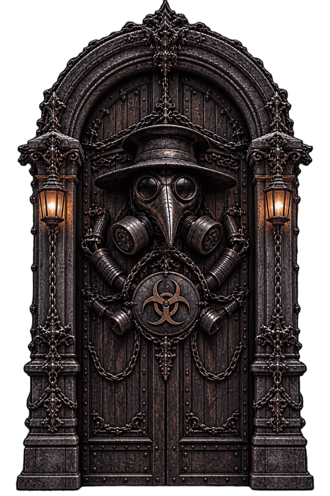

Choisis ton monde
Choisissez votre monde avec soin. Le destin ne connaît aucun chemin de retour.
-

Bienvenue à Sombreval
La peste approche -
Salem
Là où les corbeaux observent -
 Sérénissime
Sérénissime
Derrière le masque